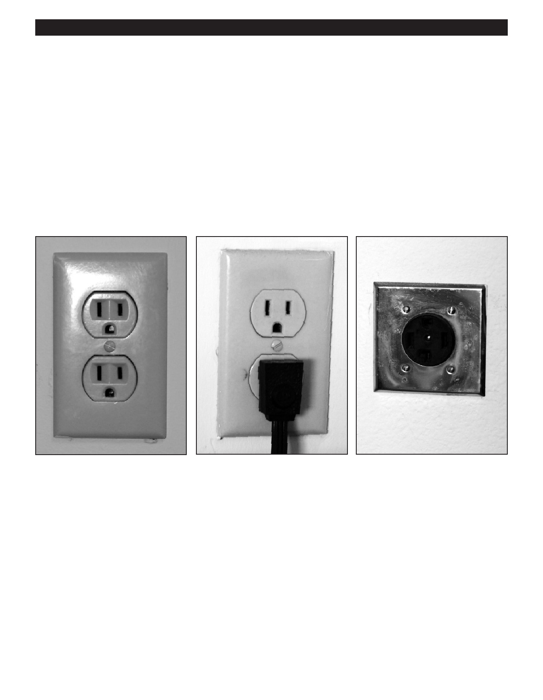

PA RT I C I PA N T R E S O U R C E G U I D E
Receptacles (Continued)
A History of Receptacles
Different types of receptacles include:
Polarized two-slot receptacles: 15 amps./125 volts; pre-1960.
Grounded three-slot receptacles: 15 amps/125 volts; now required by code.
Grounded three-slot receptacles with T-slot: 20 amps/125 volts; for large appliances.
Grounded three-slot receptacles with horizontal slots: 15 amps/250 volts; often used for window air conditioners.
Three-slot with 90-degree slot appliance receptacles: 30 amps/125 & 250 volts; often used for clothes dryers.
Three-slot appliance receptacles: 50 amps/125 & 250 volts; often used for electric stoves.
Notes:
47